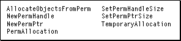

Legacy Document
Important: The information in this document is obsolete and should not be used for new development.
Important: The information in this document is obsolete and should not be used for new development.


Memory Overview
MacApp provides a sophisticated memory management system, described in detail in Chapter 3, "Core Technologies." MacApp's memory management was designed to meet two important goals:
- to ensure that critical memory requests always succeed
- to manage object allocation efficiently
Ensuring That Critical Memory Requests Succeed
To meet the first goal, MacApp defines two types of memory requests, permanent and temporary.You use permanent memory requests for most items your application allocates, such as handle and pointer memory requests. If a permanent memory request fails, no harm is done. A user may be unable to open an additional window or perform some other noncritical operation, but the application continues running and other operations can still be performed. Memory from a successful permanent allocation remains in use until you specifically free it.
You use temporary memory requests for allocations that must not fail. Suppose a user attempts to save a document and your application requests memory needed to write the document's data. If the request fails, the user will be unable to save the document. Because changes to the document will be lost, it is critical that the allocation not fail. Memory from a successful temporary allocation can be purged by MacApp (subject to your control) to make room for another allocation.
As long as there is sufficient memory in the application heap, all requests are satisfied from the available memory. It is only when a request cannot be satisfied that its type, temporary or permanent, becomes important. When a memory request can't be satisfied, the operating system calls the application's grow-zone procedure to attempt to free more memory. MacApp's grow-zone procedure,
GrowZoneProc, uses a different algorithm for a temporary request than for a permanent request. That algorithm, together with the application's temporary reserve and low-space reserve, ensures that all temporary requests are satisfied.Managing Object Allocation Efficiently
MacApp uses a global heap object,gObjectHeap, to store objects created by your application. The global heap object allocates objects from a block of nonrelocatable memory it manages. Using nonrelocatable memory for the object heap reduces the number of blocks that the Toolbox Memory Manager has to manage in the application heap.The heap object can allocate a large number of small objects efficiently, and it reuses the memory released when an object is freed. However, memory managed by the object heap cannot be used by the application for nonobject allocations. (See "Allocating Objects," beginning on page 72, for more information on the global heap object.)
MacApp makes it possible for you to manage your own object allocation rather than use the global heap object. For a description of how to modify object creation and deletion, see "Replacing MacApp's Global New and Delete Operators," beginning on page 74.
Allocating Permanent and Temporary Memory
MacApp maintains a flag,pTemporaryAllocation, to control the allocation of temporary and permanent memory. Since system requests are temporary and tend to occur at unpredictable times, thepTemporaryAllocationflag is normally set toTRUEso that memory requests will be temporary by default. You use the globalTemporaryAllocationroutine to setpTemporaryAllocation, as described in "Allocating Permanent Memory," beginning on page 546.Figure 24-1 shows MacApp's global memory allocation routines. The
PermAllocationmethod is provided for compatibility with previous versions of MacApp--it sets the value of thepTemporaryAllocationflag to the opposite of the passed value.Figure 24-1 MacApp's global memory allocation routines

- Note
- The code samples in the first part of this chapter (covering memory operations) do not include failure handling. Failure handling is demonstrated starting on page 560.

MacApp's Memory Allocation Routines
MacApp defines several memory allocation routines that request permanent memory. Each of these routines sets thepTemporaryAllocationflag toFALSE, calls a corresponding Toolbox routine to allocate the requested memory, then restores the previous state of the flag:
When the
NewPermPtr- The
NewPermPtrroutine callsNewPtrto allocate a pointer to a permanent memory allocation.SetPermPtrSize- The
SetPermPtrSizeroutine callsSetPtrSizeto set the size of a permanent memory allocation pointed to by a pointer. The resized memory allocation is still permanent.NewPermHandle- The
NewPermHandleroutine callsNewHandleto allocate a handle to a permanent memory allocation.SetPermHandleSize- The
SetPermHandleSizeroutine callsSetHandleSizeto set the size of a permanent memory allocation pointed to by a handle. The resized memory allocation is still permanent.pTemporaryAllocationflag is in its default state ofTRUE, the Toolbox routinesNewPtr,SetPtrSize,NewHandle, andSetHandleSizerequest temporary memory.Allocating Permanent Memory
When you create handles or pointers for long-lived data, such as document or window data structures, you should allocate them withNewPermHandleorNewPermPtr.You can also call the
TemporaryAllocationroutine to setpTemporaryAllocation, passing the valueFALSEto specify permanent allocation. All subsequent allocations will be permanent until the flag is set to TRUE. The following code fragments show two ways to perform the same task--make a permanent memory request for two handles of arbitrary size:
- Allocating two permanent handles with
NewPermHandle:
aHandle = NewPermHandle(100);
anotherHandle = NewPermHandle(200);- Allocating two permanent handles with
TemporaryAllocation:
// Save current state and make all subsequent requests permanent.
Boolean oldTemp = TemporaryAllocation(FALSE);
aHandle = NewHandle(100); // Permanent allocation.
anotherHandle = NewPermHandle(200); // Also permanent.
// Restore previous state of flag.
oldTemp = TemporaryAllocation(oldTemp);
Whenever the
- IMPORTANT
- When you set the
pTemporaryAllocationflag by callingTemporaryAllocation, it stays the same for any number of subsequent memory requests. However, MacApp sets allocation to temporary (sets thepTemporaryAllocationflag toTRUE) in certain circumstances. So your application should specifically set allocation to permanent when necessary and not assume it is still permanent from a previous operation.
TemporaryAllocationroutine changes thepTemporaryAllocationflag fromFALSEtoTRUE, MacApp rebuilds its temporary and low-space reserves. Frequent rebuilding can lead to purging and compacting of memory, which can harm performance, so you should avoid excessive changes to the allocation state.There is another reason to specify permanent memory only when it is absolutely necessary. If you set
pTemporaryAllocationtoFALSEand the following code causes a segment load or some other system memory request, the application could run out of permanent memory and fail (or even crash), when a temporary request would have succeeded. Minimizing the number of times you specifically ask for permanent memory will maximize MacApp's ability to guarantee that crucial memory requests are successful.Allocating Temporary Memory
Your application uses temporary memory requests for allocations that cannot fail, such as memory needed in the course of saving a document or quitting the application. MacApp uses temporary memory for allocating code segments, WDEFs and CDEFs, error dialog boxes, and critical resources.Handles and pointers allocated for short-term use, such as those allocated and disposed of in the same routine, can also be allocated with a temporary request. Since the normal state for the
pTemporaryAllocationflag isTRUE, or temporary, routines such asNewHandleandNewPtrwill default to temporary requests. However, if an allocation must not fail, you should specifically setpTemporaryAllocationto TRUE. Consider the following two code fragments:
- Allocating two temporary handles--the following code assumes that the
pTemporaryAllocationflag is already set to TRUE from a previous operation:
// NOTE: Can't be sure allocation will be temporary,
// so only do this if not essential that
// allocation is temporary.
aHandle = NewHandle(100);
anotherHandle = NewHandle(200);- Allocating two temporary handles using
TemporaryAllocation:
// Make sure all subsequent requests aretemporary.
Boolean oldTemp = TemporaryAllocation(TRUE);
aHandle = NewHandle(100); // Definitely temporary.
anotherHandle = NewHandle(200); // Definitely temporary.
// Restore previous state of flag.
oldTemp = TemporaryAllocation(oldTemp);
Allocating Memory for Objects
MacApp uses a global object,gObjectHeap, to allocate memory for your application's objects. The object heap is initialized to a default size determined by your application's'mem!'resources, which are described beginning on page 551. The initial memory allocation for the object heap is made in permanent memory. The object heap allocates objects from its block of memory until that memory is exhausted--then it increases the size of the heap by an increment size that is also defined by your application's memory resources.When the object heap has to increase its size, it allocates additional permanent memory using the Toolbox routine
NewPtr.Allocating Memory for Lists
MacApp maintains an additional flag,pAllocateObjectsFromPerm, that determines whether the memory used by an array object should be grown with a permanent or a temporary request.
MacApp's array classes include many list classes that descend from
- IMPORTANT
- Although the name
pAllocateObjectsFromPermmight sound like it controls the request type (permanent or temporary) for object allocations, it does not. It used to, but now MacApp usespAllocateObjectsFromPermonly when setting the array size in theTDynamicArrayclass.TDynamicArray. TheTDynamicArray::SetArraySizemethod callsGetPermObjectAllocationStateto get the current value ofpAllocateObjectsFromPerm. If the value isTRUE,SetArraySizecallsSetPermHandleSize; otherwise, it callsSetHandleSize.If your application performs an operation that must not fail and that operation can cause an array object to grow (for example, it can add an entry to a list object), you can specify temporary memory with code like the following:
// Make sure all subsequent array requests are temporary. Boolean oldArrayPerm = AllocateObjectsFromPerm(FALSE); // Perform operation that may cause list to grow. . . . // Restore previous state of flag. oldArrayPerm = AllocateObjectsFromPerm(oldArrayPerm);Allocating Memory for List and Objects
As a final example of making a temporary-memory request for an allocation that must not fail, consider the case where both an object allocation and a list allocation must not fail. In the code fragment that follows, the application must create and post a critical command. To ensure that the command object is created, you must setpTemporaryAllocationto TRUE (for temporary). To ensure that posting the command (which inserts the command into the application's command list, causing the list to grow) succeeds, you must also setpAllocateObjectsFromPermtoFALSE.
// Make sure object allocation is temporary. Boolean oldTemp = TemporaryAllocation(TRUE); // Create critical command object. TCriticalCmd theCriticalCmd = new TCriticalCmd; // Make sure all subsequent array requests are temporary. Boolean oldArrayPerm = AllocateObjectsFromPerm(FALSE); // Perform operation that may cause list to grow. this->PostCommand(theCriticalCmd); // Restore state of pAllocateObjectsFromPerm flag. oldArrayPerm = AllocateObjectsFromPerm(oldArrayPerm); // Restore previous state of pTemporaryAllocation flag. oldTemp = TemporaryAllocation(oldTemp);
- Note
- Another option is to create a TCriticalCmd object at startup and reuse it whenever necessary. Then the command will always be available when it is needed.
Allocating Master Pointers for the Application
Application initialization is described in detail in Chapter 4, "Launching and Terminating an Application." As part of initialization, your application makes a call similar to one of the following two calls:
InitUMacApp(4);or
InitUMacApp_Step3(4);When expanded, theInitUMacAppmacro includes a call to InitUMacApp_Step3. The value 4, passed as a parameter, tells MacApp's memory initialization to call the Toolbox routineMoreMastersfour times. TheMoreMastersroutine allocates space for a block of master pointers. By calling this routine during MacApp initialization, the master pointers are allocated in the heap first, and so memory fragmentation is minimized.Each call to
MoreMasterscreates a block of 64 master pointers. The number you pass toInitUMacAppor InitUMacApp_Step3 should equal the greatest number of dynamically allocated blocks of memory that your application will need at any one time, divided by 64.'mem!', '68k!', and 'ppc!' Resources
MacApp uses the'mem!'and'ppc!'('68k!'for a 68K application) resource types to specify several memory-related values for the application. Each of these resource types has the same format--five consecutivelongintfields. The value of each field can be positive, negative, or 0. The five fields are used to specify, in order
For
- the initial size for the global heap object (used to allocate objects)
- the default increment for the global heap object (when the heap object needs more memory to satisfy a request, it asks for a minimum of this amount)
- a value to add to other components of the application's temporary reserve (see "Determining the Size of Memory Reserves," beginning on page 65, for a full description of the components of the temporary reserve)
- the size of the application's low-space reserve
- the size of the application's stack
'68k!'and'ppc!'resources, only the first two fields are normally used. The other fields are set to 0. MacApp's default'mem!'resource, in the fileMemory.r, is defined as follows:
resource 'mem!' (kBaseMacApp, #if qNames "BaseMacApp", #endif purgeable) { 32 * 1024, // Initial pointer-based object heap size. 30 * 1024, // Minimum amount to grow object heap. 6 * 1024, // Add to temporary reserve. 6 * 1024, // Add to permanent reserve. 32 * 1024 // Base stack size. };This resource specifies default values for each of the five memory-related fields. During memory initialization, MacApp totals the values of the five fields for each'mem!'resource in the application, including MacApp's default resource. It then adds the values from each'68K!'resource for 68K applications or the values from each'ppc!'resource for Power Macintosh applications. For example, the'ppc!'resource adds 30 KB to the permanent memory reserve.MacApp then uses the totals computed from these resources to set the initial size for the heap object, set the heap object's increment, allocate temporary and low-space reserves, and set the application's stack size. Since you can specify negative numbers in these resources, you can shrink the values found in MacApp's default
'mem!'resource. For example, the default initial size for the heap object is 32 KB. If your application needs less memory for allocating objects, you can decrease this value by specifying a negative number in the first field of your own'mem!'resource.
MacApp provides additional
- Note
- For Power Macintosh applications, the
'cfrg'resource also has a field to specify stack size. Some integrated development environments allow you to directly specify a stack size using this resource, but MacApp ignores this resource and uses the value specified in the'mem!'resource.'mem!'resources to accompany certain units:
"Determining the Size of Memory Reserves," beginning on page 65, provides information to help determine appropriate sizes for your application.
- The
'mem!'resource fromDebug.rincreases the temporary reserve by 4 KB for application that use MacApp's built-in debugging.- The
'mem!'resource fromPrinting.rincreases the temporary reserve by 43 KB for applications that use printing.
- Note
- Additional information about MacApp memory resource issues can be found in the technical note "PT 21--MacApp Segmentation Illuminations," available from Apple's Developer Technical Services.